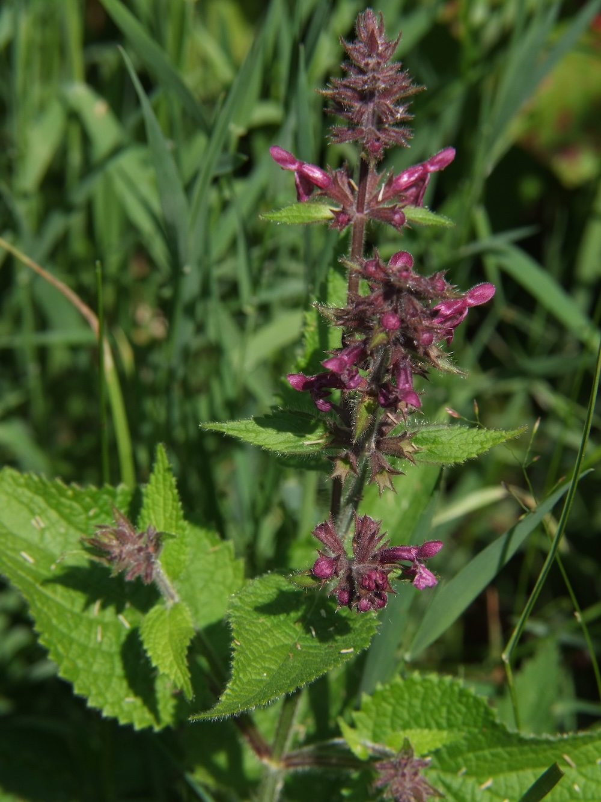
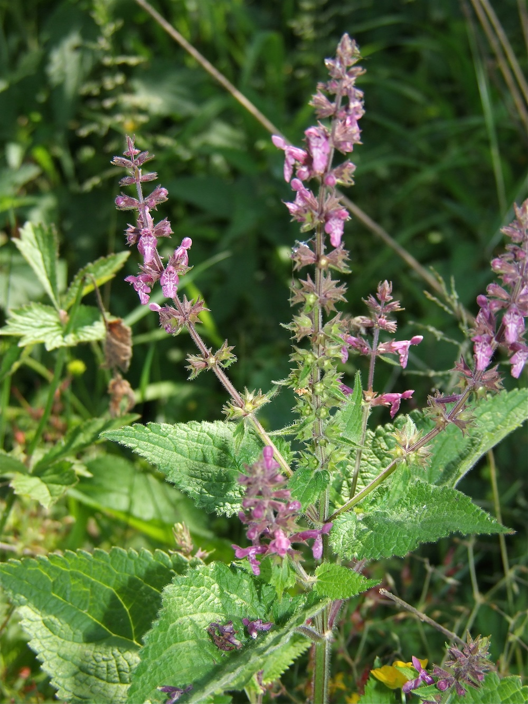

Stinkende Lippenblütlerin im Halbschatten — riecht ranzig, blüht wunderschön.



Der „stinkige“ Bruder
Beim Berühren der Blätter des Wald-Ziests entweicht ein eigenartiger, leicht ranzig-modriger Geruch — oft als „stinkend“ beschrieben. Diese chemische Verteidigung schützt die Pflanze vor Schnecken, Wild und Insektenfraß. Trotz des unangenehmen Geruchs ist die Blüte selbst wunderschön: dunkelrot-violette Lippenblüten mit weißer Zeichnung in dichten Quirlen am Stängel.
Wundheilkraut mit Tradition
Wie viele Lippenblütler war der Wald-Ziest jahrhundertelang ein wichtiges Wundheilkraut. Die zerquetschten Blätter wurden auf Schnittwunden gelegt — die antibakteriellen ätherischen Öle (die gleichzeitig den Geruch verursachen) wirken tatsächlich wundheilend. Heute weniger relevant in der Apotheke, aber im Wildkräuterwissen noch bekannt.
Wissenswertes & Merksätze
Erkennen leicht gemacht
Aufrechter, vierkantiger, behaarter Stängel (30–100 cm). Blätter gegenständig, herzförmig, gestielt, am Rand grob gezähnt, weichhaarig. Blütenquirle in den oberen Blattachseln — dunkelrot-violette Lippenblüten mit weißen Strichen auf der Unterlippe. Charakteristischer Geruch beim Anbrechen.
Indikator alte Buchenwälder
S. sylvatica ist eine klassische Zeigerpflanze für nährstoffreiche, schattige Laubwälder. Wo er noch in Beständen wächst, ist meist ein wertvoller alter Wald-Boden vorhanden.